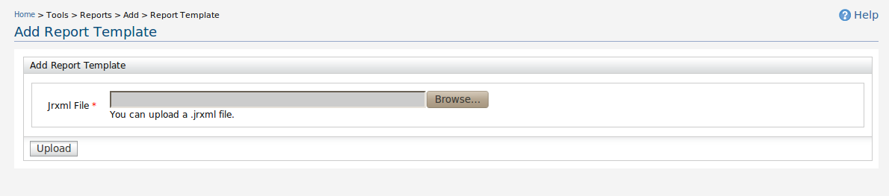
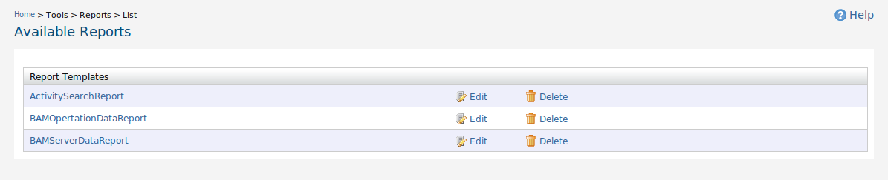
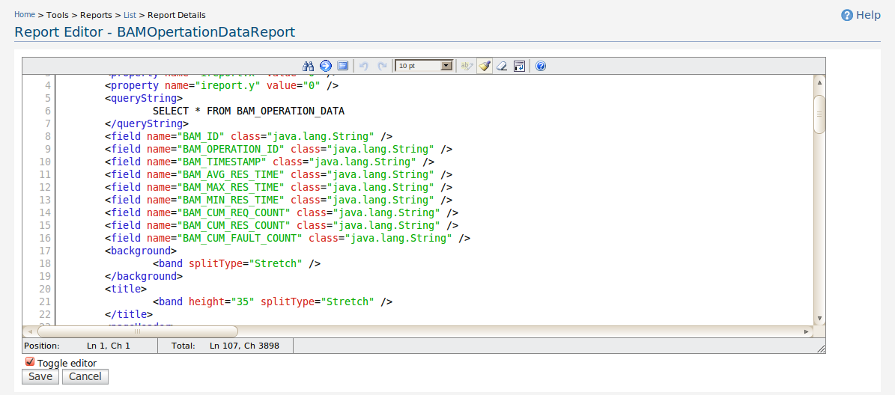
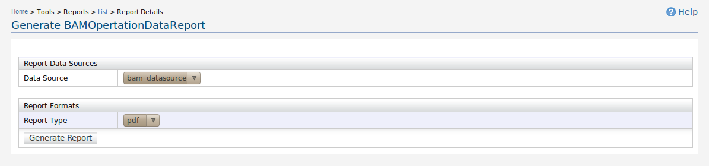

Reports
First you need to create a report template according to your report structure.
You can use a report template designer(e.g iReport) to generate this templates.
Using your own report design - Custom Template
- Add your Custom report template.
- In the navigation under Tools click Reports -> Add -> Custom Report
- Add Report Template page appears.

Figure 1. Add Report Template page
- Click on Reports -> List , after you will see the available reports list
- Reports list page appears.

Figure 2. Reports List
- If you want to update the template ,click on the Edit icon.
- Report Editor page appears.

Figure 3. Report Editor
- Click on the report name , then you will see the report generation page.
- Select Data Source and report Type. (If you haven't configured a data source please follow the the guide to create a
new Data Source )
- Generate Report page appears.

Figure 4. Generate Report
- Click on the Generate Report button to generate the report.
Using Default Report Templates
You can also use the report templates which are inbuilt with WSO2 server,
and follow the instructions provided in the UI. Follow instruction given Reports using report templates
to add reports using templates.